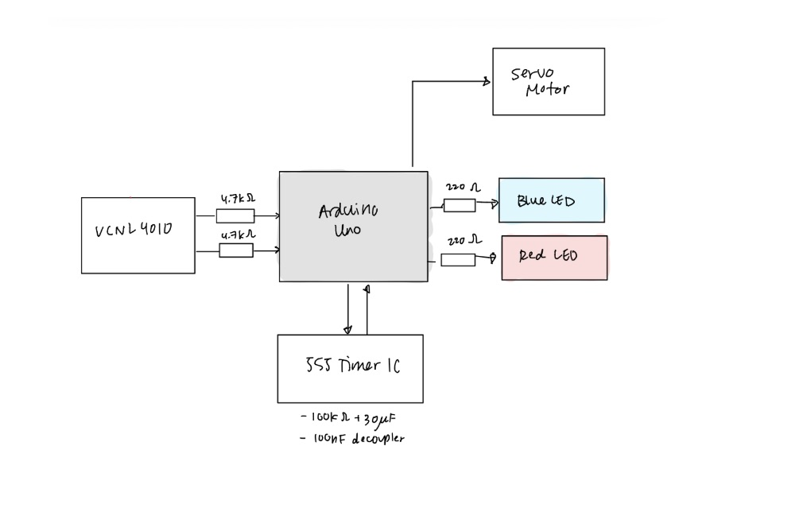
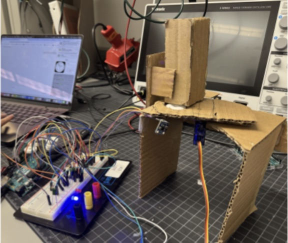

Motion-detected Candy Dispenser

the problem
This project was completed for ECE203: Electronic Circuit Design, Analysis and Implementation. My partner and I wanted to build a sensor-to-actuator system that combined noisy analog input, timing, state management, and physical actuation — and honestly, who doesn't love an automatic candy dispenser?
what i did
We designed and built a touchless candy dispenser around an Arduino Uno, a VCNL4010 IR proximity sensor, an NE555 timer, and a servo motor. Rather than handling the cooldown purely in software, we used the 555 as a dedicated hardware timer, so the dispensing interval lives in the circuit itself, with two LEDs exposing the system state to the user. We created the enclosure using cardboard and *lots* of hot glue...
The VCNL4010 reports a proximity count over I²C; when a hand pushes the reading past a calibrated threshold of ~3,000 counts, the Arduino fires the servo through a 0° → 90° → 0° sweep that drops a single mint, and simultaneously triggers the 555. The 555's RC network (100kΩ / 30μF) holds its output high for roughly 3.3 seconds, and the Arduino watches that output on a digital pin to lock out re-triggering mid-cycle. A blue LED signals ready; red signals dispensing or cooling down.
close up


the result
The finished dispenser runs a clean, repeatable loop: a baseline of ~2,180 counts at idle, a spike above 3,300 on hand detection, then a consistent 3-second cooldown before returning to ready. Getting there meant debugging across four layers at once — components, wiring, circuit design, and code — and the two hardest bugs turned out to be missing I²C pull-up resistors and a floating trigger pin on the 555, both of which produced symptoms that initially looked like software problems.